|
|
Chapter 12 |
Cartesian Coordinates |
Topics Covered In This Chapter:
· Cartesian coordinate systems
· The X-axis and Y-axis
· The Commutative Property of Addition
· Absolute values and the abs() function
This chapter doesn’t introduce a new game. Instead it goes over some simple mathematical concepts you will use in the rest of this book. In 2D games the graphics on the screen can move left or right and up or down. These two directions make up two-dimensional, or 2D, space. Games with objects moving around a two-dimensional computer screen need a way to translate a place on the screen into integers the program can deal with.
This is where the Cartesian coordinate system comes in. The coordinates are numbers for a specific point on the screen. These numbers can be stored as integers in your program’s variables.
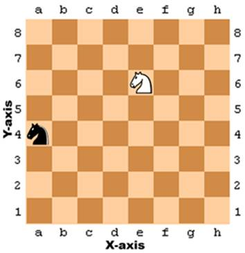
Figure 12-1: A sample chessboard with a black knight at a, 4 and a white knight at e, 6.
A common way to refer to specific places on a chessboard is by marking each row and column with letters and numbers. Figure 12-1 is a chessboard that has each row and each column marked.
A coordinate for a space on the chessboard is a combination of a row and a column. In chess, the knight piece looks like a horse head. The white knight in Figure 12-1 is located at the point e, 6 and the black knight is located at point a, 4.
This labeled chessboard is a Cartesian coordinate system. By using a row label and column label, you can give a coordinate that is for one and only one space on the board. If you’ve learned about Cartesian coordinate systems in math class, you may know that numbers are used for both the rows and columns. That chessboard would look like Figure 12-2.
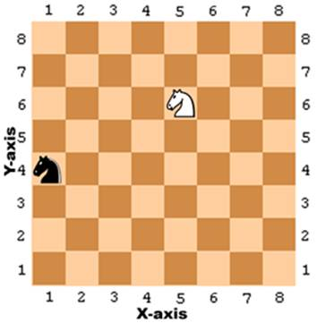
Figure 12-2: The same chessboard but with numeric coordinates for both rows and columns.
The numbers going left and right along the columns are part of the X-axis. The numbers going up and down along the rows are part of the Y-axis. Coordinates are always described with the X-coordinate first, followed by the Y-coordinate. In Figure 12-2, the white knight is located at the coordinate 5, 6 and not 6, 5. The black knight is located at the coordinate 1, 4 which is not to be confused with 4, 1.
Notice that for the black knight to move to the white knight’s position, the black knight must move up two spaces and to the right by four spaces. But you don’t need to look at the board to figure this out. If you know the white knight is located at 5, 6 and the black knight is located at 1, 4, then you can use subtraction to figure out this information.
Subtract the black knight’s X-coordinate and white knight’s X-coordinate: 5 - 1 = 4. The black knight has to move along the X-axis by four spaces.
Subtract the black knight’s Y-coordinate and white knight’s Y-coordinate: 6 - 4 = 2. The black knight has to move along the Y-axis by two spaces.
By doing some math with the coordinate numbers, you can figure out the distances between two coordinates.
Cartesian coordinates use negative numbers. Negative numbers are numbers that are smaller than zero. A minus sign in front of a number shows it is negative. -1 is smaller than 0. And -2 is smaller than -1. If you think of regular numbers (called positive numbers) as starting from 1 and increasing, you can think of negative numbers as starting from -1 and decreasing. 0 itself isn’t positive or negative. In Figure 12-3, you can see the positive numbers increasing to the right and the negative numbers decreasing to the left on a number line.
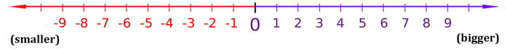
Figure 12-3: A number line.
The number line is useful to see subtraction and addition done with negative numbers. The expression 4 + 3 can be thought of as the white knight starting at position 4 and moving 3 spaces over to the right (addition means increasing, which is in the right direction).
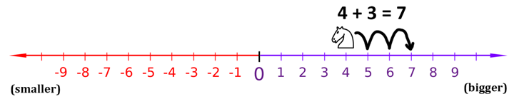
Figure 12-4: Moving the white knight to the right adds to the coordinate.
As you can see in Figure 12-4, the white knight ends up at position 7. This makes sense, because 4 + 3 is 7.
Subtraction is done by moving the white knight to the left. Subtraction means decreasing, which is in the left direction. 4 - 6 would be the white knight starting at position 4 and moving 6 spaces to the left, like in Figure 12-5.
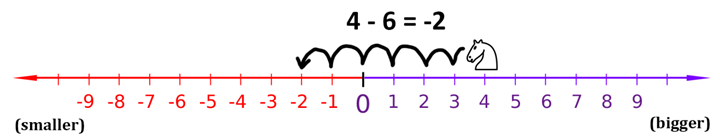
Figure 12-5: Moving the white knight to the left subtracts from the coordinate.
The white knight ends up at position -2. That means 4 - 6 equals -2.
If you add or subtract a negative number, the white knight would move in the opposite direction. If you add a negative number, the knight moves to the left. If you subtract a negative number, the knight moves to the right. The expression -6 - -4 would be equal to -2. The knight starts at -6 and moves to the right by 4 spaces. Notice that -6 - -4 has the same answer as -6 + 4.
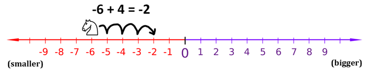
Figure 12-6: Even if the white knight starts at a negative coordinate, moving right still adds to the coordinate.
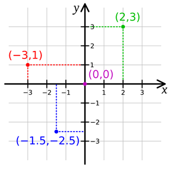
Figure 12-7: Putting two number lines together creates a Cartesian coordinate system.
You can think of the X-axis as a number line. Add another number line going up and down for the Y-axis. If you put these two number lines together, you have a Cartesian coordinate system like in Figure 12-7.
Adding a positive number (or subtracting a negative number) would move the knight up the number line, and subtracting a positive number (or adding a negative number) would move the knight down.
The 0, 0 coordinate is called the origin.
Subtracting and adding negative numbers is easy when you have a number line in front of you. It can also be easy without a number line too. Here are three tricks to help you add and subtract negative numbers by yourself.
Trick 1: “A Minus Eats the Plus Sign on its Left”
When you see a minus sign with a plus sign on the left, you can replace the plus sign with a minus sign. Imagine the minus sign “eating” the plus sign to its left. The answer is still the same, because adding a negative value is the same as subtracting a positive value. 4 + -2 and 4 - 2 both evaluate to 2.
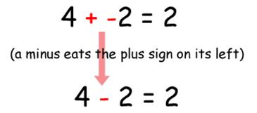
Figure 12-8: Trick 1 - Adding a positive and negative number.
Trick 2: “Two Minuses Combine Into a Plus”
When you see the two minus signs next to each other without a number between them, they can combine into a plus sign. The answer is still the same, because subtracting a negative value is the same as adding a positive value.
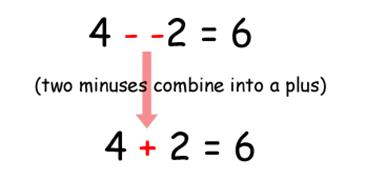
Figure 12-9: Trick 2 - Subtracting a positive and negative number.
Trick 3: The Commutative Property of Addition
You can always swap the numbers in addition. This is the commutative property of addition. That means that doing a swap like 6 + 4 to 4 + 6 will not change the answer.
If you count the boxes in Figure 12-10, you can see that it doesn’t matter if you swap the numbers for addition.
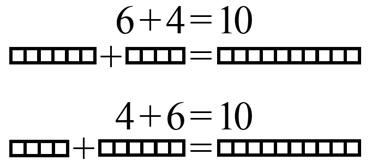
Figure 12-10: Trick 3 - The commutative property of addition.
Say you are adding a negative number and a positive number, like -6 + 8. Because you are adding numbers, you can swap the order of the numbers without changing the answer. -6 + 8 is the same as 8 + -6.
Then when you look at 8 + -6, you see that the minus sign can eat the plus sign to its left, and the problem becomes 8 - 6 = 2. But this means that -6 + 8 is also 2! You’ve rearranged the problem to have the same answer, but made it easier for us to solve without using a calculator or computer.

Figure 12-11: Using the math tricks together.
The absolute value of a number is the number without the negative sign in front of it. Therefore, positive numbers do not change, but negative numbers become positive. For example, the absolute value of -4 is 4. The absolute value of -7 is 7. The absolute value of 5 (which is positive) is just 5.
You can figure out the distance between two objects by subtracting their positions and taking the absolute value of the difference. Imagine that the white knight is at position 4 and the black knight is at position -2. The distance would be 6, since 4 - -2 is 6, and the absolute value of 6 is 6.
It works no matter what the order of the numbers is. -2 - 4 (that is, negative two minus four) is -6, and the absolute value of -6 is also 6.
Python’s abs() function returns the absolute value of an integer. Try entering the following into the interactive shell:
>>> abs(-5)
5
>>> abs(42)
42
>>> abs(-10.5)
10.5
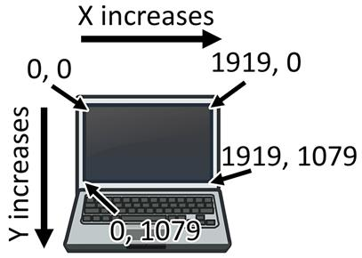
Figure 12-12: The Cartesian coordinate system on a computer screen.
It is common that computer screens use a coordinate system that has the origin (0, 0) at the top left corner of the screen, which increases going down and to the right. This is shown in Figure 12-12. There are no negative coordinates. Most computer graphics use this coordinate system, and you will use it in this book’s games.
Summary
Most programming doesn’t require understanding a lot of math. Up until this chapter, we’ve been getting by on simple addition and multiplication.
Cartesian coordinate systems are needed to describe where in a two-dimensional area a certain position is. Coordinates have two numbers: the X-coordinate and the Y-coordinate. The X-axis runs left and right and the Y-axis runs up and down. On a computer screen, origin is in the top-left corner and the coordinates increase going right and down.
The three tricks you learned in this chapter make it easy to add positive and negative integers. The first trick is that a minus sign will eat the plus sign on its left. The second trick is that two minuses next to each other will combine into a plus sign. The third trick is that you can swap the position of the numbers you are adding.
For the rest of the book, we will use the concepts from this chapter in our games because they have two-dimensional areas in them. All graphical games require understanding how Cartesian coordinates work.